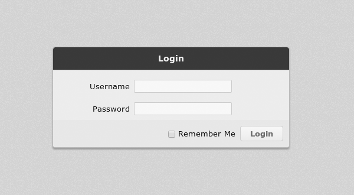
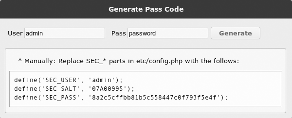

SQLite Web Master Documentation
1. Instruction
SQLite Web Master is a full-featured database management system for SQLite 3.X. It's web-based, so you can manage your databases from anywhere. It's powerful and easy to use. You can use it to manage multiple databases, design schemas, edit contents.
2. Features
- Manage Databases: create/delete/vacuum/download.
- Design Schemas: table/view/index/trigger.
- Manage Tables: rename/copy/move/empty/populate.
- Manage contents: list/filter/insert/update/delete.
- Import/Export Schema/Contents: sql/xml/csv
- Run SQL Commands:the command is highlight.
3. Requirements
- You need a web server (such as Apache, IIS, Nginx...) to host this application.
- And PHP version is 5.3.3 or higher, with sqlite3 extension. When you use import/export, xmlreader/xmlwriter, iconv extensions are needed.
- If you want to import MDB/XLS files:
- The application must run under MS Windows XP (or later) Platform.
- The PHP extension com_dotnet must be loaded.
- MADE must be installed. ( http://www.microsoft.com/en-us/download/details.aspx?id=13255 )
- To access this application you need a web browser with cookies and javascript enabled.
4. Installation
- Upload
Upload all files to your web server. For example, upload to http://www.yourwebsite.com/swm/. Maybe you need an FTP software to do that.
-
Log in and Try
Use your browser to open http://www.yourwebsite.com/swm/. You will see this:
* The default username is admin, and the password is admin.
* If you checked the Remember Me. The system will remember you for a week since your last time used it.
* Now log in and try to use it.
- Change Password
- Use your browser to open http://www.yourwebsite.com/swm/index.php?i=pass.
 - Input your username and password, click Generate. Copy the three line codes.
- Open the config file etc/config.php in the application directory on the server.
* You can download the remote config.php to local. edit it and upload it to override the old one.
* Or you can edit remote config.php by FTP software or others.
- Replace the following codes with your copied one.
/**********************************************************************/ /** user/pass config: use 'index.php?i=pass' to generate it */ define('SEC_USER', 'admin'); define('SEC_SALT', '13D54C5D'); define('SEC_PASS', '9745c76f7cc303ddde38909a09894e4b'); /**********************************************************************/ - Now test it. Use your browser to open http://www.yourwebsite.com/swm/index.php
- Use your browser to open http://www.yourwebsite.com/swm/index.php?i=pass.
-
Configure Databases
- Open the config file etc/config.php in the application directory on the server.
* You can download the remote config.php to local. Edit it and upload it to override the old one.
* Or you can edit remote config.php by FTP software or others.
Find this part:
/**********************************************************************/ /** For security reason, the database directories/files should NOT be accessible from url directly. */ $_DATABASES = array( 'demo' => array('path' => P_PATH.'/srv/demo.sqlite'), ); /** The databases in these directories are manageable. */ $_DB_GROUPS = array( # 'managed' => array('path'=> P_PATH.'/opt/', 'tail'=>'.sqlite'), ); /**********************************************************************/* The $_DATABASES can have multiple items. Each has a unique name, a path. The path point to a file. If the database needs a username, password or extensions, the item should like this:
If the file doesn't exist, it will create it as a new database.
... 'demo' => array( 'path' => P_PATH.'/srv/demo.sqlite', 'user'=>'username', 'pass'=>'password', 'exts'=>array('exts/xxx.so') ), ...
* The $_DB_GROUPS can have multiple items too. Each has a unique name, a path. The path point to a directory, not a file. The tail is the extension name of a database file. If the database needs a username, password or extensions, the item should like this:
... 'managed' => array( 'path' => P_PATH.'/opt/', 'user'=>'username', 'pass'=>'password', 'exts'=>array('exts/xxx.so') ), ...Important: All encryption features will be enabled only if the SQLite encryption module is installed. - Now you can test it.
- Open the config file etc/config.php in the application directory on the server.
- Security
If the application uploads to a public site:
- The user/password better complicates enough (length > 8, with letters, numbers and symbols).
-
The database directories/files should NOT be accessed from url directly. For example:
If you put this application in .../www/swm/. The database's path should not be .../www/swm/data/data.sqlite. Otherwise, your data.sqlite may be downloaded by others from http://www.yourwebsite.com/swm/data/data.sqlite. - All the files should be readonly except tmp/.
- If your computer may be used by someone who you don't trust. You should NOT check Remember Me when you log into the system.
- Backup your files regularly for whatever reasons.
- Follow security recommendations for PHP and your web-server.
5. Configuration
- etc/config.php
- P_PATH: This constant defines the physical path of the application.
- P_TEMP: This constant defines the temporary directory. MUST be writable.
- V_PATH: This constant defines the virtual path of the application.
- THEME: This constant defines the theme. It's the name of a css file in res/. Another is "main"
- DEBUG: If the value is TRUE, when some error occurs, you'll see the backtrace information.
- CONTENT_TEXT_SIZE: This constant defines the max length of a field in content list.
- CONTENT_PAGE_SIZE: This constant defines the max items in content list.
-
TEMPLATE_MODE:This constant has three value:
- 0: The template engine will use BUILD method to render output.
- 1: The template engine will use COMPILE method to render output(a little faster). The compiled file will cache in P_TEMP folder.
- 2: The template engine will return all marks the page used instead of the real content.
- IMPORT_STRICT_MODE If the value is TRUE, you can import data from physical path (on the server).
- SEC_PATH: If the value is TRUE, the system will add sec-token to the url.
- SEC_LAST: This constant defines the max seconds the system will remember you since you last time used it.
- SEC_USER:, SEC_SALT: and SEC_PASS: These three constants define the user token. You must generate them by index.php?i=pass.
- $_DATABASES:
This variable defines the database files you use in the system. At least has one item. Important:
- If the file does not exist, the system will create it as new database.
- The folder of the file must exist and be writable.
$_DATABASES = array( 'database1' => array('path' => P_PATH.'/srv/data1.sqlite'), 'database2' => array('path' => P_PATH.'/srv/data2.sqlite'), ... ); - $_DB_GROUPS:
This variable defines the database groups you want to manage in the system. You can add/delete database files.
And you can have multiple groups.
$_DB_GROUPS = array( 'managed1' => array('path'=> P_PATH.'/opt1/', 'tail'=>'.sqlite'), 'managed2' => array('path'=> P_PATH.'/opt2/', 'tail'=>'.sqlite'), ... );
- etc/snippets.php
This file defined the snippets in Run SQL.
- etc/encodings.php
This file defined the encodings used by Export and Import.
6. Support & Feedback
If you have any problem, or suggestion. Please feel free to contact me.
Bian Yueting <http://codecanyon.net/user/bian_yueting>7. Other Licenses
- Glyphicons Free Icons
- website: http://glyphicons.com/
- license: CC BY 3.0 (http://creativecommons.org/licenses/by/3.0/)
- Codemirror
- website: http://codemirror.net/
- license: MIT-style (http://codemirror.net/LICENSE)
- JQuery
- website: http://www.jquery.com/
- license: MIT-LICENSE (http://en.wikipedia.org/wiki/MIT_License)